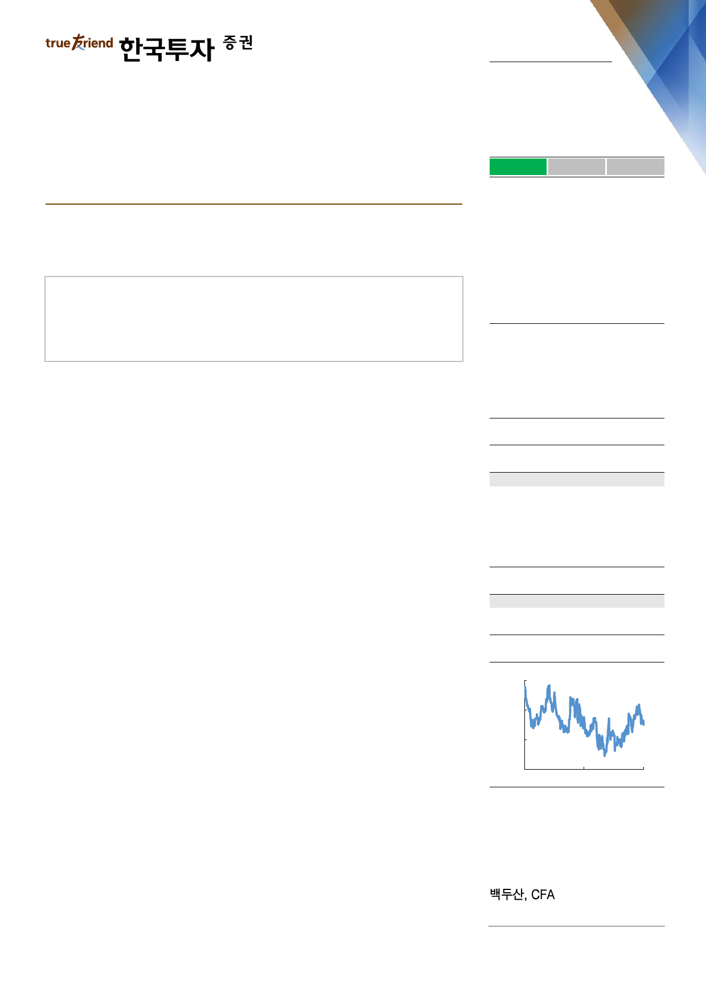

실적 Review
2019. 7. 29
삼성카드(029780)
하 회
부 합
순이익의 컨센서스 대비를 의미
상 회
희망을 엿본 실적
중립(유지)
영업수익 부진으로 순이익은 컨센서스 10% 하회
건전성과 조달여건 개선의 기미를 엿봄
향후 건전성과 이에 연계된 배당 턴어라운드 여부가 주가의 핵심 변수
Facts : 순이익은 컨센서스 10% 하회
2분기 순이익은 716억원으로 우리 추정치 및 컨센서스를 약 10% 하회했다. 신용
판매(신판) 수익이 예상치 대비 약 260억원 적게 나왔다. 한편 대손비용과 판관비
는 예상치에 부합했고, 이자비용은 오히려 추정치 대비 약 100억원 적었다. 우선
개인신판은 전년동기대비 2.0% 증가에 그쳤다. 수익성 중심 전략 차원에서 무이
자할부 축소 등으로 신판 증가세가 둔화됐고, 코스트코 독점가맹점 계약도 5월 말
에 종료된 영향이다. 가맹점수수료 인하에 대응해 당분간 고마진 사업에 집중할
계획이다.
Pros & cons : 건전성과 조달여건은 개선의 기미
가맹점수수료는 1분기 급락 이후 안정화됐다. 올해 1월 말 큰 폭의 인하 후 당분
간 카드사들의 수수료 인하여력이 없다는 공감대가 형성됐기 때문에 향후 2~3년
간은 추가적인 수수료율 하락을 유도하는 정책이 나오긴 어려울 전망이다. 분기
대손율은 1.71%로 전분기대비 7bp 상승했다. 작년 4분기부터 워크아웃 제도개편
과 경기부진 등으로 연체율과 대손율이 오름세였는데, 이자비용 부담 완화 등으로
이번 2분기부터 건전성 악화 추세가 진정됐다. 한편 분기 신규 차입금리는 1.99%
로 전분기대비 17bp 하락했다. 장기채 위주 조달에 따라 향후 1~2년에 걸쳐 이
자비용은 다시 점진적인 하락 추세가 재개될 전망이다.
Action : 건전성을 고려해 중립의견 유지
중립의견을 유지한다. 가맹점수수료 인하 여진이 내년 초까지 이어지고 대손율이
상승추세인 것을 고려했다. 다만 이번 분기 대손율 상승 추세가 지난 6개월 동안
의 추세에 비해 다소 누그러졌고, 조달비용이 하락전환한 점은 긍정적이다. 향후
배당수준을 최종적으로 결정지을 자산건전성 개선 여부가 주가에 있어 핵심 변수
다.
Stock Data
KOSPI(7/26)
2,066
주가(7/26)
36,000
시가총액(십억원)
4,171
발행주식수(백만)
116
52주 최고/최저가(원)
38,750/31,750
일평균거래대금(6개월, 백만원)
2,706
유동주식비율/외국인지분율(%)
20.2/11.6
주요주주(%) 삼성생명보험 외 2 인
71.89
Valuation 지표
PER(x)
PBR(x)
ROE(%)
DY(%)
EPS(원)
BPS(원)
2018A
10.7
0.5
5.0
4.6
3,235
63,455
2019F
11.7
0.6
4.8
4.4
3,076
64,581
2020F
10.9
0.5
5.1
4.4
3,289
66,269
주가상승률
절대주가(%)
KOSPI 대비(%p)
1개월
(7.1)
(4.5)
6개월
4.0
9.2
12개월
(1.6)
8.1
주가추이
(원)
42,000
38,000
34,000
30,000
Jul-17
자료: FnGuide
Jul-18
Jul-19
doosan@truefriend.com